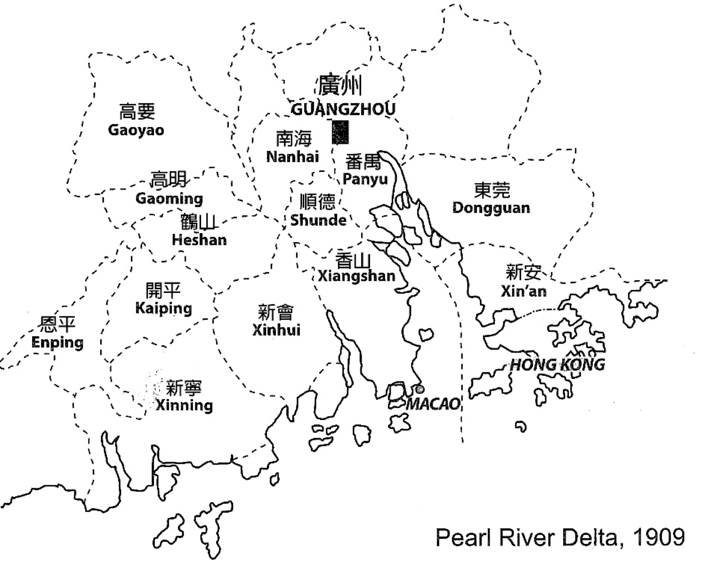
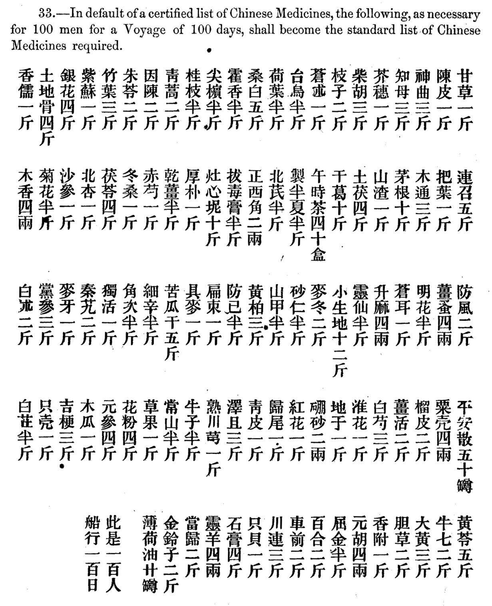
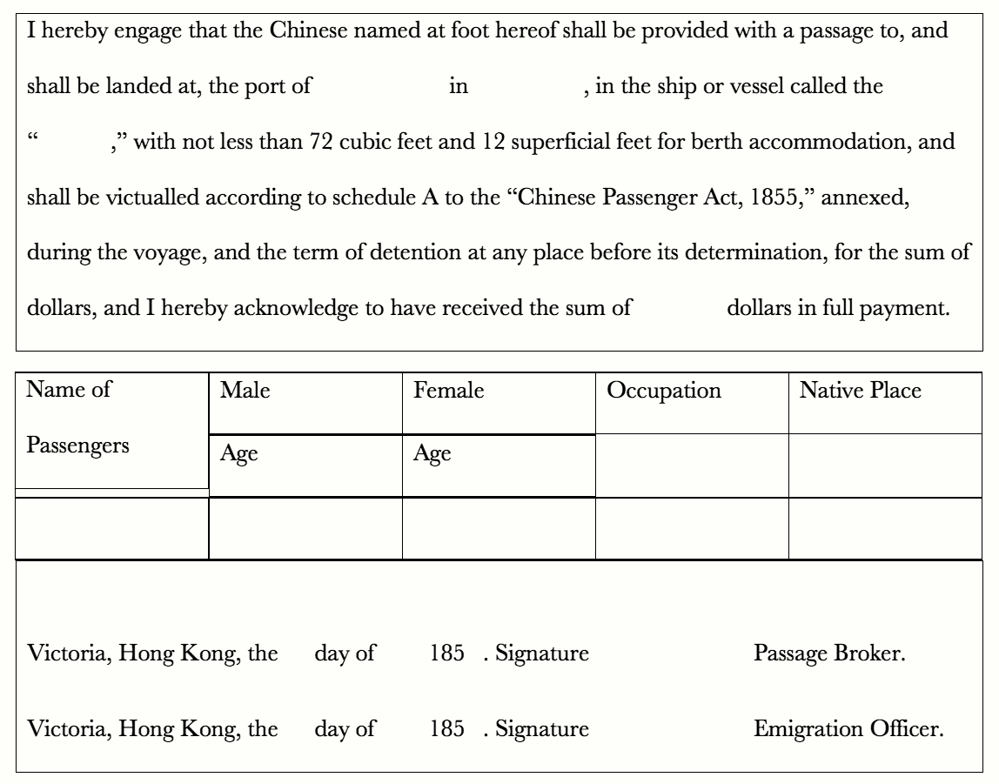
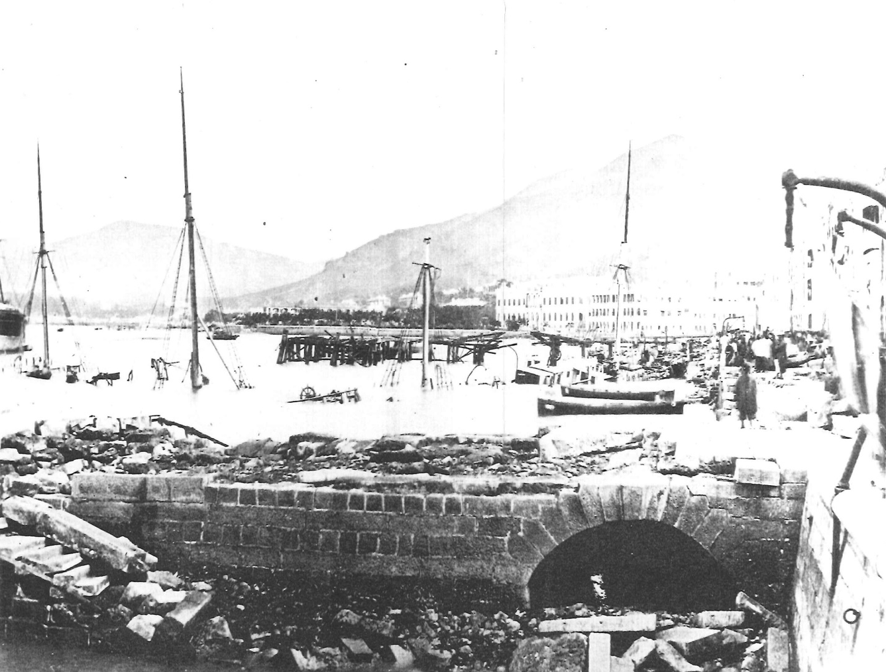
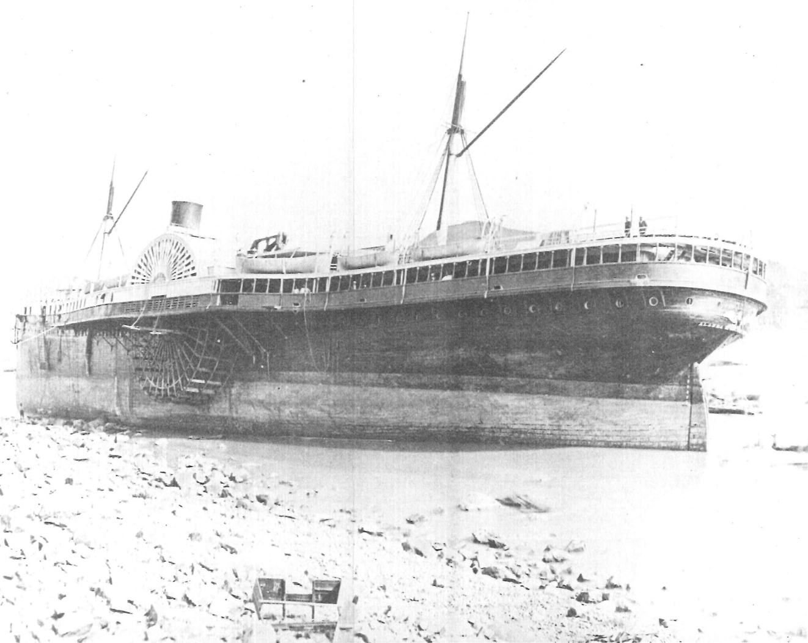
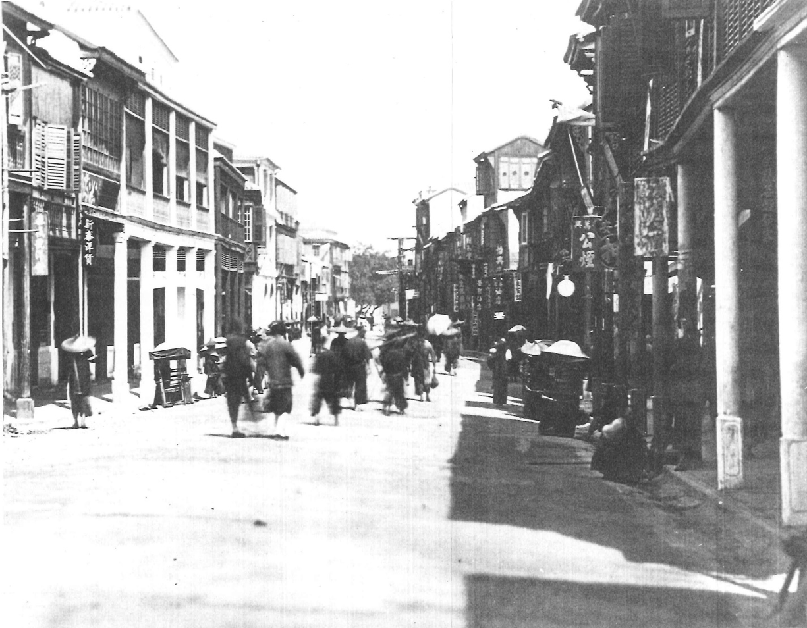
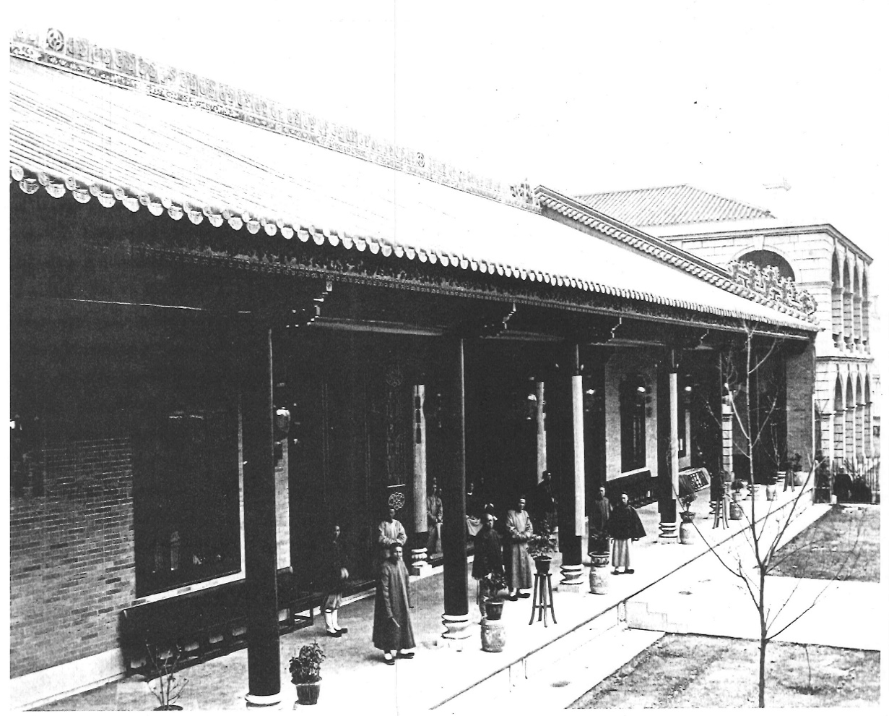

Web exclusive essay | Printable version (PDF)
© 2019 Stanford University Chinese Railroad Workers of North America Project
Jack Hang-Tat Leong
University of Toronto
In the 1850s the gold rush opened a link across the Pacific between North America and Hong Kong, which was already developing as a major gateway to mainland China and other parts of Asia. Tens of thousands of Chinese merchants and gold seekers crossed this marine highway. Previous research and studies on Hong Kong as a leading Pacific gateway have focused on the gold rush period and other immigration phenomena. Not much research has pinpointed Hong Kong’s role in serving as an entrepôt for the Chinese railroad workers who made an irreplaceable contribution in building the transnational railroads in the United States and Canada. More importantly, these workers acted as intermediators for the material and cultural interactions between Asia and North America when they crossed the Pacific in both directions. Most, if not all, of the Chinese railroad workers started their journey to North America from Hong Kong’s emigrant port. During the years of building the railroads, Hong Kong was the connecting point for most of the workers’ communications, remittances, and goods, and sometimes the repatriation of bones between North America and their hometowns in southern China.1 An examination of Hong Kong’s role in bringing these workers and their letters, goods, money, and cultural translation across the Pacific would make a significant contribution to the study of Chinese railroad workers in North America. Reviewing the archives, historical records, and writings by people who recollected this period of Hong Kong’s history, this essay illustrates the port that these young men from Guangdong would have encountered when they were there and en route to North America.
Building Railroads in North America in the 1860s
Although the railroad was built in the 1860s and Chinese workers were present in significant numbers between 1865 and 1869, the workers departed Hong Kong for San Francisco and other places starting in the 1850s. According to a Central Pacific Railroad (CPRR) payroll record from January 1864 kept at the California State Railroad Museum, there were about twenty Chinese workers, led by Hung Wah and Ah Toy, who went to the United States in the 1850s through Hong Kong for the gold rush and other mining work.2 When many of the mines became exhausted and the working conditions became more hostile, these workers turned to the next opportunity: building the railroad. Chinese represented a significant percentage of the total railroad workers in the early stages of construction, reaching 1,200 by 1865, before the first group of workers directly recruited for building the CPRR arrived in the United States from Hong Kong in 1866.3 This essay focuses on Hong Kong in the 1850s and 1860s to offer a more comprehensive picture of these workers’ lives before and after their railroad-building efforts in North America.
Reasons for Chinese Emigration in the 1850s and 1860s
Once the CPRR determined that large numbers of Chinese workers were needed for construction, labor recruiters started to target the regions near Hong Kong, which was then the only legitimate emigration port to the United States, that were experiencing economic hardships. These included Taishan (formerly known as Xinning), Enping, and Kaiping in Guangdong Province (Figure 1). There were three main reasons why so many were willing to leave their hometowns in southern China during this period. First, there was a shortage of arable farm land to feed the large population in these areas. Second, uncertainty, disruption, and violence prevailed in economic, political, and social spheres because of the two Opium Wars (1839−1842, 1856−1860) and the Taiping Rebellion (1850−1864), generating waves of Chinese emigrants to and through Hong Kong.4 Third, natural disasters and severe unemployment had resulted in famines.5

This discussion focuses on these “push” factors, or reasons for emigration. I would argue that the “pull” factors, or attractions in North America, appear to be equally, if not more, important. The promise of employment opportunity at $26 a month, while it was merely $1 in China, was very appealing. The gold rush in the 1850s created the prosperous image of Gold Mountain, the Chinese name for San Francisco and, more broadly, western North America. In addition to bringing news of gold and newfound wealth, the returning miners formulated a perception that there was a high demand for labor, both skilled and unskilled, in North America. The legalization of emigration by the Peking (Beijing) Convention of 1860 and the Treaty of Tientsin (Tianjian) of 1858, along with the well-developed emigration port and regulations in Hong Kong, would help to motivate the Chinese to consider joining the railroad workforce in the United States. In the 1868 report of the harbor department of Hong Kong, it was noted that “4,421 more Chinese have left Hongkong during the year under review [1868] than appeared to have left in 1867. This is partially caused by a large number of laborers being required for the construction of railways in the United States.”6
Sources of Chinese Workers
As mentioned above, the Chinese emigrants to North America were largely from Taishan (Xinning), Enping, and Kaiping. According to data collected by the Rev. A. W. Loomis from the Six Companies, or Chinese Consolidated Benevolent Association of San Francisco (huiguan), in 1868 Chinese from these three native places numbered more than 35,000, or 58% of the total Chinese population of 60,100 in North America that year, the bulk being railroad workers (Table 1). The proximity of these counties to Hong Kong, together with Hong Kong’s improving port facilities and humane passenger regulations, as discussed later in this essay, provides justification for the railroad workers to use Hong Kong as the emigration port for their journey to North America. Loomis’s data are among the first attempts to provide information regarding the origins of these Chinese workers. His figure of total arrivals, 106,800, published in September 1868, included only part of the arrivals in 1868. According to the emigration records maintained by the San Francisco Custom House and the Hong Kong government’s own figures, the total number of emigrants from 1848 to 1868 from Hong Kong to San Francisco ranged from 100,000 to 126,800. The discrepancy between Loomis’s figure and the official statistics is acceptable given the possibility of erroneous counting by both ports and because some workers probably arrived without official registration.7
| Company | Native place | Number of members |
| Sam Yup/Yap | Nanhai, Punyu, and Shunde | 10,000 |
| Kong Chau/Chow | Xinhui, Enping, and Heshan | 8,300 |
| Yeung/Yeong Wo | Zhongshan, Dongguan, and Zengcheng | 11,800 |
| Ning Yeung | Taishan | 18,200 |
| Hop Wo | Taishan and Kaiping | 8,500 |
| Hip Kay (Yan Wo) | Hakka [Hejia] | 3,300 |
| Total | 60,100 |
The Agency of Chinese Workers
Most of the Chinese railroad workers in North America worked voluntarily as opposed to being coerced, smuggled, or even enslaved. They were not “coolies” but motivated workers who were proud of their efforts, sought reasonable compensation, and were organized. There were several reasons for this. First, the United States forbade “coolie emigration” from China in 1862. Second, the “push” and “pull” factors discussed above provided sufficient motivation for these workers to participate in the building of the railroad voluntarily. As early as the 1850s, there was some misunderstanding of Chinese going to California as “coolies.” In view of this confusion, Frederick T. Busch, the American consul general in Hong Kong, noted that “the emigrants are … merchants, small tradesmen, agriculturists, and artisans, all of them respectable people.”8 In later years, the governor of Hong Kong, Sir John Bowring, described the emigrants to California as voluntary, adventurous, and laborious.9 Chinese scholars from the Republic of China and the People’s Republic of China have supported this viewpoint. For example, Shang Ying Wu, the former cabinet minister of the Republic of China, and Feng Sheng Wu, a mainland China researcher, reported that most railroad workers received a credit of $75 to $125 for the voyage and other expenses when they were recruited.10 In return, the workers guaranteed, by their family and village, to pay off this credit in monthly wages for seven months. Most workers paid for the voyage to California in this way. Hong Kong rapidly adapted and became a major transportation center for these workers and the related communication and trade networks.
The Port of Hong Kong in the 1850s and 1860s
In the early 1850s news of the discovery of gold in California spread to Guangdong through Hong Kong. Thousands of people moved to Hong Kong to work in the trade for the California market, and the hundreds of passengers waiting to depart for “Gold Mountain” made the newly established port a vibrant and blooming place.11 Hong Kong became the premier emigration port because of its regulations on passenger ships, its safe port, and the legitimacy of emigration that Hong Kong provided. Chinese emigrants, who faced a two- to three-month sea journey, favored facilities with a good reputation in terms of health and safety, considering the desperate and risky conditions at the time.
Passengers Act of 1853 and Its Enforcement in Hong Kong
Before 1853 the only regulations regarding ships carrying Chinese passengers to the United States came from the American Passengers Act of 1848, which mainly regulated ventilation, cleanliness, and the number of passengers. The first Passengers Act legislated in Hong Kong in 1853 was derived from the Passengers Act passed by the English Parliament in 1852, with some modification for Asian and African passengers.12
The Passengers Act of 1853 specified the conditions for any ships propelled by sails from Hong Kong. It is worthwhile to discuss these conditions at length, as they depicted the ideal living conditions of the railroad workers during the voyage from Hong Kong to North America for over two months.
Duration of the Voyage
From October to March, it would take about one hundred days to sail from Hong Kong to San Francisco, California. From April to September, the duration was expected to be about seventy-five days. This length of voyage information served as a general reference for the conditions the Passengers Act of 1853 outlined, rather than an actual requirement. With the understanding that legislators were informed of the shipping business, this duration appeared to be realistic and reasonable. It would be more desirable to embark on the journey in the summer months, as it took a quarter less time and the weather was warmer, more appealing to the workers from Guangdong, who were used to a warmer climate. This probably was considered the high season for travel, creating higher demand for ships and space for passengers.
Space on Board
According to the Passengers Act of 1853 each passenger was to have at least twelve feet of surface space, which was a reduced allowance for “Natives of Asia or Africa.” In the original Passengers Act of 1852, it was fifteen feet. Considering the average smaller figures of people from the villages in southern China, this allowance provided sufficient room.
Diet
The 1853 act specified that during the voyage and the time in port, passengers should be provided with pure water and wholesome provisions, including rice, peas or beans, salt pork, lard, salt fat, fresh fat or oil, pickled vegetables, tobacco or opium, salt, pepper, vinegar, tea, and firewood. Two pounds of biscuits a day would be issued when the weather was too bad for cooking or when required by the ship’s surgeon. The list would provide a well-balanced diet with sufficient nutrients and quantity, an indication that these passengers, railroad workers included, were to be treated with respect and dignity and considered as “customers” in the modern sense. This list provides evidence of foods that were available in large quantity for shipment from Hong Kong.
Health and Safety
In addition to the presence of a surgeon, the act required the ship to carry sufficient medicines, medical instruments, and other things necessary for the medical treatment of the passengers during the voyage, such as various ointments, flour, soup, oil of peppermint, alcohol, combs, and sugar.
If the provisions in this act were followed, the railroad workers’ journey would have been pleasant. However, the act remained superficial without effective enforcement. The act was proclaimed by the governor of Hong Kong, Sir Samuel George Bonham, on December 28, 1853. Yet these were merely gestures by Bonham, who was pressured by the British colonial office to adopt and enforce the act in order to improve Great Britain’s international image.
There was strong resistance to the act from the business community, including both Chinese and European merchants, who perceived that meeting the provisions of the act would increase shipping costs and therefore passenger ticket prices. Because of this, it was feared that Hong Kong would lose the transpacific shipping business to other ports. Bonham bluntly pointed out to the colonial office that he could not strictly enforce the act.13
Governor Bonham, who had never taken the enforcement of the Passengers Act seriously, left Hong Kong in 1854. William Caine, who served as colonial secretary of Hong Kong from 1854 to 1859, detested this failure and took immediate actions to enforce the act. He appointed the chief police magistrate, J. W. Hillier, to be the emigration officer and John Rickett as the marine surveyor on May 6, 1854, for the purpose of carrying out the provisions of the Passengers Act of 1852. These officials soon realized, and perhaps also pressed by the merchants, that several stipulations of the act could not be observed or were inappropriate for Chinese passengers, such as the passenger capacity according to ship’s tonnage, which could vary by 40% to 50% when measured in different ways. The medicine chest carrying European medicines and medical instruments was considered unnecessary, too, as Chinese passengers much preferred their own medicines.
Chinese Passengers Act of 1855
Facing difficulties in abolishing abuses using the terms of the Passengers Act of 1852, the Hong Kong government enacted the Chinese Passengers Act of 1855. In addition to revising the earlier law’s provisions regarding space, diet, health, and safety according to the realistic needs of and affordability by the Chinese passengers, there were several new requirements for more effective enforcement.
Inspection by the Emigration Officer
According to the act, the emigration officer could enter and inspect the ship at any time to ensure the regulations, such as those covering the fittings, provisions, and stores, were satisfied. The law mandated the following, which indicate that policy makers in Hong Kong at the time understood the concept of humane treatment:
- That the ship is sea-worthy, and properly manned, equipped, fitted, and ventilated; and has not on board any cargo likely, from its quantity, or mode of stowage, to prejudice the health or safety of the passengers.
- That the space appropriated to the passengers in the tween decks contain at the least 12 superficial and 72 cubical feet of space for every adult on board. …
- That a space of 5 superficial feet per adult is left clear on the upper deck for the use of the passengers.
- That provisions, fuel, and water have been placed on board, of good quality, properly packed, and sufficient to supply the passengers on board during the declared duration of the intended voyage. …
- That Medicines and Medical Comforts have been placed on board. …14
The emigration officer would further certify that passengers understood where they were going and comprehended the nature of any contracts of service that they had made.
Diet, Medicine, and Safety
There was little change in the 1855 act on the provision of food and water. Added to the list of food items was fish and beef; tobacco and opium were removed. Chinese medical practitioners, properly qualified to the satisfaction of the colonial surgeon, were eligible to be ships’ medical officers. A list of medical supplies was amended gradually, with traditional Chinese herbal items added to Western medicines. In 1869 a list in Chinese of Chinese medicines to be provided on board was added, as the English translation of these medicines probably made little sense to the merchants who needed to prepare them and the doctors who used them.
The Hong Kong Government Gazette of July 17, 1869, listed 104 Chinese herbs and medicines required for every one hundred passengers on every one hundred days of voyage (Figure 2).

The list appears to be comprehensive, another indication that the Hong Kong government expected passengers to be well treated. It provides further evidence of the resourcefulness of Hong Kong in the provision of these medicines that were used during the workers’ journey and their stay in the United States. Table 2 lists selected medicines and their major medical functions.
| Chinese Medicine | Common and Latin Names | Main Functions |
| 霍香 [huo xiang] | Cablin patchouli | Treatment of fever and cold |
| 桔 梗 [ju geng] | Platycodon grandiflorus | Treatment of phlegm, coughing, bronchitis, and sore throat |
| 陳皮 [chen pi] | Sun-dried tangerine peel | For digestion and excretion issues |
| 香附 [xiang fu] | Cyperus rotundus, nut grass | Improvement of mood, treatment of depression |
| 川芎 [chuan xiong] | Ligusticum striatum | Relief of pain, treatment of blood stasis |
| 元参 [yuan can] | Scrophularia ningpoensis, Ningpo figwort | Toxin removal, soothes sore throats |
| 硼砂 [peng sha] | Borax | Treatment of infections, conjunctivitis, genital ulcers |
| 草果 [cao guo] | Amomum tsao-ko | Treatment of stomach pain, indigestion, vomiting, malarial disorders, symptoms of drunkenness from alcohol consumption |
| 薄荷 [bo he] | Menthol | Relief of headaches, neuralgia, itchiness |
In the acts of 1852 and 1855, there were provisions for the medical examination of passengers before boarding and a requirement for a ship’s surgeon. The medical inspection and health of emigrants was regulated by Ordinance No. 6, passed in 1859, and further enhanced by Ordinance No. 6, passed in 1867.15 Chinese railroad workers typically lodged at least three days before their embarkation in the depot provided by a ship’s owner or charterers and approved by the emigration officer. A medical officer was employed to inspect the emigrants and supervise their comfort and well-being. Furthermore, an onboard hospital was to be provided, although it could be considered as part of passenger space.
Penalty and Enforcement
The ship’s owner was required to submit 1,000 pounds as a bond for following the act, including its regulations and schedules. Anyone who committed, aided, or abetted in the violation of the act could be penalized 100 pounds. In view of the insufficient number of marine police, the act allowed military force to be employed to seize or detain any ship subject to forfeiture. Any dispute for enforcement of the act would be settled in court.
When the act was introduced, some ships immediately embarked to nearby ports, such as Macau, to avoid penalties. British warships were employed to seize some of these ships to enforce the act. The Chinese Passengers Act continued to be resisted and bypassed by merchants, and sometimes by the agents of its enforcement. This situation was best summed up in the annual administration report of 1858, as Governor John Bowring commented:
The discrepancy between reality and what was required by the Chinese Passengers Act and its related regulations was obvious enough that even the head of the Hong Kong colonial authorities admitted it in his report to the British government, arguing for relaxing the stringent regulations. This conflict between the ideal situation written in the act and various regulations and what was in practice continued throughout the 1860s. Nevertheless, the Hong Kong government officials made every effort to secure a safe passage for Chinese workers. In 1860 the Emigration Office put up a notice admitting that “much ignorance prevails in this Port as to the Law and Regulations affecting Chinese Passenger Ships leading to perpetual reference by Ship Masters and Merchants, to the Emigration Officer.”17 A condensed version was published in this notice, with the intention to reinforce the Chinese Passengers Act. More measures would be introduced to regulate emigrants, passage brokers, and labor recruiters.
Regulating Emigrants, Passage Brokers, and Labor Recruiters
Although there was a clause in the Chinese Passengers Act that allowed emigration officers to screen passengers who were forced to travel by criminals and human traffickers, it was not adequate. Language barriers, corruption, and threats to family that remained in China made the verbal screening done before boarding a ship ineffective.
In 1857 the Hong Kong government established an ordinance for licensing and regulating emigration passage brokers.18 Brokers had to obtain a license for a fee of $200 and enter a bond of $5,000. A contract ticket had to be printed in a plain, legible typeface and accompanied with a translation in the Chinese language, in plain, legible characters (Figure 3).

The contract ticket form, particularly the Chinese version, provided important information to emigrating workers for understanding their rights on their journey. The licensing appears to be a step forward in protecting workers in the recruitment and transportation process, particularly for those going to North America, which had similar regulations and requirements for recruiting Chinese workers. However, Ordinance 11 could not prevent labor recruitment abuse, such as kidnapping and fraud, for those going to South America and, in some cases, Southeast Asia. In the annual administration report of 1858, Governor Bowring admitted that there were continuing crimes and abuses seen in the recruitment of laborers from China. He pointed out that, although there were benefits in transferring the excess laborers, who were in misery and without food in their hometowns, to places that needed them, the Hong Kong colonial government needed to work with the Chinese authorities to prevent and punish such abominations.
In the 1860s Chinese emigration, regulated and protected by the Chinese Passengers Acts and their sequent regulations, was no longer illegal in China following the Treaty of Tientsin (Tianjian) of 1858 and the Convention of Peking (Beijing) of 1860, which allowed Chinese emigrating to other countries, including Great Britain and the United States.
As a result of the legalization of Chinese emigration, there were more Chinese passenger regulations proclaimed in Hong Kong. These regulations attempted to secure that proper procedures were followed and that the moral and physical well-being of Chinese emigrants was protected. The implementation of these regulations involved cooperation with the Zongli Yamen, the government organization in charge of foreign affairs in the Qing dynasty.19
According to these regulations, any emigration agent had to apply in writing to the nearest consul at the location of recruitment. The consul had to ensure the solvency and respectability of the applicant and, having examined and approved the copies of the rules and contracts, had to communicate them to the Chinese authorities and request that they issue the license necessary for opening an emigration agency. These rules and contracts were posted on the door of the emigration agency and in the quarters of the emigrants. Bearing the seals of the Chinese authorities and the consulate, copies of these rules and contracts were also circulated and made known in the targeted towns and villages.
Every Chinese wishing to emigrate under an engagement had to enter his name in a register kept for that purpose, in the presence of the emigration agent and of an inspector representing the Chinese government. Afterward he was at liberty to return to his home or to remain in the emigration depot to wait the departure of the ship that was to carry him to his destination.
The contracts specified
- The place of destination and the length of the engagement
- The right of the emigrant to be conveyed back to his own country and the sum that should be paid at the expiration of his contract to cover the expense of his voyage home and that of his family should they accompany him
- The number of working days in the year and the length of each day’s work
- The wages, rations, clothing, and other advantages promised to the emigrant
- Gratuitous medical attendance
- The sum that the emigrant agreed to set aside out of his monthly wages for the benefit of persons to be named by him, should he desire to appropriate any sum to such purpose
- Work schedule, which would be no more than six days a week, nine and a half hours a day
Any violation of the above would cost the emigration agent’s license and the loss of the bond. In 1868 the Hong Kong government safeguarded the agency of the workers. In the new regulations, if the emigration officer found any emigrant who was unwilling to leave the port or had been procured by any fraud, violence, or other improper means, he would land such emigrant and procure him a passage back to his native place. The recruitment agent would compensate the worker $50 and provide the costs while the worker was waiting for the return passage. The person guilty of the felony would be imprisoned for a maximum of two years or subjected to penal servitude for three to seven years.20
The Passengers Acts and various regulations relating to Chinese emigration and laborer recruitment might not be enforced perfectly. Nevertheless, they improved the general safety for Hong Kong as an emigration port. The regulations and measures discussed in this section showed that the Hong Kong government made a lot of effort in maintaining a regulated and safe emigration port for these workers. The fees and taxes generated by Chinese passengers were significant sources of income for the Hong Kong government. Moreover, international pressure on the British government against the slave trade and harsh conditions on passenger ships put pressure on Hong Kong to enforce the acts more firmly. As a consequence, emigrants to the United States through Hong Kong were mostly free and voluntary. The constraints on them were mostly financial, usually in terms of loans of voyage and advance wages to their family.21 Once they paid these loans or advance wages, they were free to pursue any other work available to them, although there was probably not much choice at the time.
Risky Voyage
A two- to three-month voyage in the wild Pacific Ocean would certainly carry risks and danger that the government agencies and the recruiters could not control, such as pirates, typhoons, and acts of violence. Even after the Passengers Acts were in place, shipping companies continued to squeeze in as many passengers as possible, making sea journeys crowded and sometimes lacking in a sufficient supply of water and food. Passengers might be reported as crew members, the orlop deck was created to increase the superficial area, and bribes were common. In Ordinance No. 12 of 1868 the Hong Kong government acknowledged the ways shipping companies had fudged the number of passengers by requiring that cooks and ship crews be included in the provision requirements.22
Besides overloading, other dangers and discomfort were high winds, stormy seas, shipwrecks, piracy, and sickness.23 Thunderstorms and typhoons were common in Hong Kong and the South China Sea in the summer. Disasters could happen while the passengers were waiting for the voyage and during the journey. In March 1852, for example, a severe thunderstorm destroyed a wooden building in Hong Kong that housed more than sixty passengers waiting to board a ship to California. Six men were reported dead, and several were missing.24 Several major typhoons were reported in the 1860s and 1870s (Figures 4 and 5).25


In the 1860s piracy became so rampant that the Hong Kong government enacted several regulations and acts to deal with the issue, some intended to be a coordinated response with the Qing authorities.26 Reports of ships vandalized by pirates appeared in the news and government circulations from time to time.
Fighting violence, kidnapping, and other criminal activities was a constant area of concern for authorities in Hong Kong. With the increase in population, mainly from transplants from southern China and emigrating passengers in transit, and the booming trading and shipping businesses, the crime rate increased. In 1864, for example, the Hong Kong colonial government attributed the rising crime rate to the influx of mainland Chinese who had come by river steamers that cost only 10 to 20 cents and whose sole resource on arrival was robbery.27 The Chinese railroad workers waiting for their passage to California could easily become the victims of these criminals or, alternatively, be perceived as a potential threat to the colony’s safety.
By the late 1860s, the Pacific Mail Steamship Company had been in business for around twenty years, offering greater conveniences and comfort for travelers between California and China.Sixty-nine percent of the Chinese passengers conveyed to San Francisco in 1868 went via Pacific Mail steamers.28 Nevertheless, the working-class passengers would probably have much preferred the more affordable passage provided by ships propelled by sails, despite the risks and the discomforts.
Impact on Hong Kong and the Cultural Mediation by the Railroad Workers
Hong Kong’s significance in the study of Chinese railroad workers in North America reaches beyond merely providing a relatively safe, legitimate, and accessible emigration infrastructure and port facilities. The cultural, social, and business links in Hong Kong figure prominently in their stay in Hong Kong while awaiting departure, during their voyage, in the years while they worked and lived in North America, and after their return to China, whether alive or dead. Through Hong Kong the workers communicated with and supported their loved ones back home. Its rich networks in trading provided them food and medicines during their journey and the years ahead when they were building the railroads. This section investigates the interactions and impact these workers had in China, Hong Kong, and North America, particularly in terms of migration patterns, living styles, identity, and economic status.
Impact on the Workers
The Chinese workers endured much hardship and homesickness. Yet the global logistics and communications network built around Hong Kong helped to make their life in their new home endurable. Having food from home was certainly comforting. Records from that period indicate that the meals for these Chinese workers during the construction of the railroads were mainly Cantonese and featured rice, noodles, meats, vegetables, fish, dry oysters, squid, salted fish, pork, and chicken on special occasion. Sometimes abalone, bamboo shoot, seaweed, minced cabbage, mushroom, nuts, and peanut oil were included. At construction sites there often were Chinese stores that supplied daily needs, such as tobacco, clothes, shoes, bowls, and chopsticks.29 The comfort food and daily supplies were mostly shipped from or through the port of Hong Kong.
Communication with families at home helped to make the workers’ life in North America more satisfactory. Although most workers were illiterate, and the communication was most likely rendered through a letter writer and reader, the exchange provided essential meaning and purpose for the workers, who usually carried the main responsibility to provide financial support for their families and villages. Informal postal service provided by travelers and Chinese companies through Hong Kong existed in the 1850s and early 1860s. In view of the rising need of regular communication between North America and China, a postal arrangement between Hong Kong and the United States was made in 1867. This was a regular topic in the Hong Kong government dispatches and correspondence between the governor and the colonial office from 1867 to 1869.30
Several Chinese newspapers were created to convey information for potential migrants. For example, Xia’er guanzhen, established in 1853 in Hong Kong, was the first Chinese news periodical in China and Hong Kong. It provided practical information, such as wages for different jobs and regulations governing Chinese in California.31 Zhongwai xinwen qiribao (1871-1872), another Chinese newspaper based in Hong Kong, was committed to improving the well-being of Chinese sojourners. These newspapers were instrumental in bringing news about overseas Chinese to the Qing court and eventually convinced the Chinese government to establish overseas consulates and embassies for the protection of Chinese migrants.
The material impact on the workers appears to be the accumulation of wealth; monthly wages of $26 to $35 were significant compared to the living standards of southern China, where the monthly wage was about $1.32 Overseas workers were seen as great savers. It was estimated that they saved $13 to $20 a month, or $300 to $480 over two years.33 According to Sinn and Sheng, many Chinese workers obtained their initial capital for starting small businesses and purchasing land in North America, Hong Kong or their hometown.34 The image of “Gold Mountain” wealthy returnees was prevalent in southern China, including Hong Kong, for more than a century.35
Other impacts were less tangible. Through the building of the initial railroads, many workers later transferred their skills in construction and demolition to railroad projects in other areas, including in China.36 The wealth and accumulation of Western knowledge enhanced the social and economic status of these overseas workers in the eyes of the Chinese government. In later years the Qing government started to recognize the economic status of Chinese in North America. In 1876, for example, the governor general of Guangdong and Guangxi, Liu Kun, referred to the Chinese in San Francisco as hua-shang, or Chinese merchants.37 The railroad workers’ hard work and achievements helped to transform the image of “coolie” to “Chinese merchants,” or entrepreneurs, in the historical narrative.
Impact on Hong Kong
In facilitating Chinese emigration to North America and elsewhere, Hong Kong’s population grew impressively, and its economy advanced rapidly. The population of Hong Kong increased from approximately 20,000 in the late 1840s to 120,000 in the 1860s. Governor Richard Graves MacDonnell of Hong Kong commented in 1869 that the rapid increase was due partly to the labor demand in the United States.38 The booming emigration activities in Hong Kong were already being recognized in the 1850s. The Hong Kong Administration Report of 1854 noted that many of the new arrivals were tradesmen who brought business with them, “and with increase of trade came further increase of population.”39

With the increase in population and the emergence of emigration-related businesses, Hong Kong made great strides toward modernity (Figure 6). In the early 1860s Hong Kong appeared to be a barbarous place to Wang Tao, a Chinese scholar who moved to Hong Kong from Shanghai to escape the Qing government’s prosecution for his connection to the Taiping Rebellion.40 He complained about the vulgar customs, the rudeness of the inhabitants, the strange language (Cantonese), and the inedible food when he first arrived in Hong Kong in 1862.41
In later years Wang observed that Hong Kong had become an enjoyable place with brothels, beautiful waitresses, good music, and grand restaurants serving excellent food.42 In another article Wang depicted a booming harbor with merchants from near and far and new roads and houses.43
The opening in 1870 of the Tung Wah Hospital, a charity organization that became the de facto Chinese administrative body in Hong Kong, was largely attributed to the traffic of people and goods related to Chinese emigration (Figure 7). Its mandates were to provide medical care and funeral services for Chinese in Hong Kong, most of them emigrants in transit. Later it became an authority that Chinese emigrants trusted with their money transfers, correspondence with their families, and even their bodies for burial in their native villages. As Sinn commented, “In fact, one of Tung Wah’s greatest concerns and greatest achievements was the care for Chinese emigrants—fighting kidnap[ping] rackets, improving the condition of contract labourers and preventing traffic in slave-labourers.”44

Conclusion
Although the working conditions were severe for Chinese railroad workers in North America, many of them asserted their agency and prospered. During the construction of the transcontinental railroad system, Hong Kong served as the central connecting port, providing support for the workers. The networks and supplies from Hong Kong assisted them in their actual journeys, communications with their families, the transmission of goods and remittances, and information exchange. For those who remained in the United States, Hong Kong continued to be their connection to home, with its well-established shipping and emigration facilities, Western legal and political framework, and strategic geographic location.
Notes
- H. M. Yip, Donghua yizhuang yu huanqiu cishan wangluo: Dangan wenxian ziliao de yinzheng yu qishi [The Tung Wah Coffin Home and global charity network: Evidence and findings from archival materials] (Hong Kong: Joint Publishing, 2009), 30−31.
- Jianhong Sheng, Meiguo zhong yang Taiping Yang tie lu jian she zhong de Hua gong [The Chinese workers in the construction of the Pacific Central Railroad] (Shanghai: Zhong xi shu ju, 2010); William F. Chew, Nameless Builders of the Transcontinental Railroad (Bloomington, IN: Trafford Publishing, 2004); Qiwei Lei and S. Zhang, “Taiping Yang tie lu de xiujian yu meiguo huaren lishi de fazhan” [The construction of the Pacific Central Railroad and the history of Chinese in America], Guangdong Qiao Wan, April 26, 2011, accessed January 18, 2016, www.qb.gd.gov.cn.
- Sheng, Meiguo zhong yang Taiping Yang tie lu, 55−58.
- T. N. Chiu, The Port of Hong Kong (Hong Kong: Hong Kong University Press, 1972), 29−30.
- E. Sinn, Pacific Crossing: California Gold, Chinese Migration, and the Making of Hong Kong (Hong Kong: Hong Kong University Press, 2013), 47; C. Lai, G. Ding, and B. Jia, History of Chinese Migration to Canada, 1858−1966 (Beijing: Renmin zhubanjie, 2013), 14-18; Sheng, Meiguo zhong yang Taiping Yang tie lu, 28−30.
- H. G. Thomsett, “Annual Returns of the Shipping and Other Matters Connected with the Marine Department, 1868,” Hong Kong Government Gazette, March 20, 1869, 131.
- Sinn, Pacific Crossing, 336.
- Letter from Frederick T. Busch, Consul in Hong Kong, to Daniel Webster, Secretary of State, April 11, 1851, in Dispatches from U.S. Consuls in Hong Kong, 1844−1906, Vol. 1, National Archives (United States). Nineteenth Century Collections Online, accessed September, 28, 2018, [link].
- Letter from Sir John Bowring to Edward B. Lytton, October 22, 1858, Great Britain, Colonial Office, Original Correspondence: Hong Kong, 1841−1951, National Archives (UK), Series 129/69 (CO 129), no. 141, 332−336.
- Shang Ying Wu, One Hundred Years of Chinese in the United States and Canada (Hong Kong: Jialuo Publishing, 1954), 10−13; F. Wu, Qiyue Huagong Shi [The history of Chinese contract workers] (Jiangxi: Jiangxi Renmin Chubanshe, 1988), 322.
- Sinn, Pacific Crossing, 43−47.
- W. Caine, “Proclamation,” Hong Kong Government Gazette, December 31, 1853, Vol. I. No. 15, 67−69.
- Sinn, Pacific Crossing, 74−75.
- W.T. Mercer, “Chinese Passengers’ Act 1855,” in Hong Kong Government Gazette, February 2, 1856.
- Hong Kong Ordinance No. 6 of 1859, “An Ordinance for providing Hospital Accommodation on board Chinese Passenger Ships, and for the Medical Inspection of the Passengers and Crews about to proceed to Sea in such Ships,” December 26, 1859; Hong Kong Ordinance No. 6 of 1867, “An Ordinance for better securing the Health of Emigrants in Chinese Passengers Ships clearing from Hong Kong,” June 17, 1867.
- R. L. Jarman, ed., Hong Kong Annual Administration Reports, 1841−1941, vol. 1: 1841−1886 (London: Public Record Office, Archive Edition, 1996), 251−252.
- W.T. Mercer. “Government Notification,” Hong Kong Government Gazette, January 12, 1861.
- Hong Kong Ordinance No. 11, “An Ordinance for Licensing and Regulating Emigration Passage Brokers,” November 3, 1857.
- Richard Graves MacDonnell, “An Ordinance enacted by the Governor of Hongkong, with the Advice of the Legislative Council thereof, for repealing the ‘Hongkong Emigration Ordinance, 1867’ and for better securing the Health and Protection of Emigrants in Chinese Passenger Ships clearing from Hongkong,” Hong Kong Government Gazette, October 17, 1868.
- MacDonnell, “Repealing the ‘Hongkong Emigration Ordinance, 1867.’”
- Wu, One Hundred Years of Chinese, 10−13; Wu, Qiyue Huagong Shi, 322.
- Hong Kong Ordinance No. 12, “An Ordinance for repealing the Hong Kong Emigration Ordinance, 1867, and for better securing the Health and Protection of Emigrants in Chinese Passenger Ships clearing from Hong Kong,” October 13, 1868.
- Sinn, Pacific Crossing, 70−73.
- Sinn, Pacific Crossing, 72.
- Baling Wu, Xianggang Zhanggu [The history of Hong Kong], Hung On To Special Collection, University of Hong Kong Library, 1984, 297.
- Yun Wu, “Xianggang chengzhi haidu tiaoli yuange” [The development of regulations for the punishment of piracy in Hong Kong], in Centenary History of Hong Kong, ed. C. W. Li (Hong Kong: Nan Zhong Bianyi Zhubanshe, 1948), 64.
- Jarman, Hong Kong Annual Administration Reports, 1864.
- Jarman, Hong Kong Annual Administration Reports, 1868.
- Sheng, Meiguo zhong yang Taiping Yang tie lu, 77.
- K. C. Fok, Hong Kong and the Asian Pacific—An Index of Source Materials, 1840−1900 (Hong Kong: Joint Publishing, 1993), 39−40.
- Sinn, Pacific Crossing, 80.
- Lei and Zhang, “Taiping Yang tie lu.”
- J. Chen, The Chinese of America (San Francisco: Harper & Row, 1980), 75.
- Sinn, Pacific Crossing, 80; Sheng, Meiguo zhong yang Taiping Yang tie lu, 77.
- Chen, Chinese of America, 75.
- Chuenyan David Lai, Canadian Steel, Chinese Grit:No Chinese Labour, No Railway (Vancouver, BC: Vancouver National Executive Council of the Canadian Steel, Chinese Grit Heritage Documentary, 1998), 3−5. Booklet accompanying the video Canadian Steel, Chinese Grit.
- Ching-Hwang Yen, “Ch’ing Changing Images of the Overseas Chinese (1644−1912),” Modern Asian Studies 15, no. 2 (1981): 261−285.
- Jarman, Hong Kong Administration Report, 1869.
- Jarman, Hong Kong Administration Report, 1854, 216.
- E. Sinn, “Fugitive in Paradise: Wang Tao and Cultural Transformation in Late Nineteenth-Century Hong Kong,” Late Imperial China 19, no. 1 (1998): 56−81.
- T. Wang, “Ji Yang Xingbu” [Letter to Yang Xingbu], Taoyuan chidu 8 (1876): 247−249.
- T. Wang, “Xianggang luelun” [A brief discussion of Hong Kong], Xunhuan ribao, April 29, 1874.
- T. Wang, “Xianggang jilue” [An account of Hong Kong], Xunhuan ribao, February 7, 1874.
- E. Sinn, “Materials for Historical Research: Source Materials on the Tung Wah Hospital, 1869−1941—The Case of a Historical Institution,” in Research Materials for Hong Kong Studies, ed. Alan Birch, J. C. Jao, and Elizabeth Sinn (Hong Kong: Centre for Asian Studies, University of Hong Kong), 1990, 197.